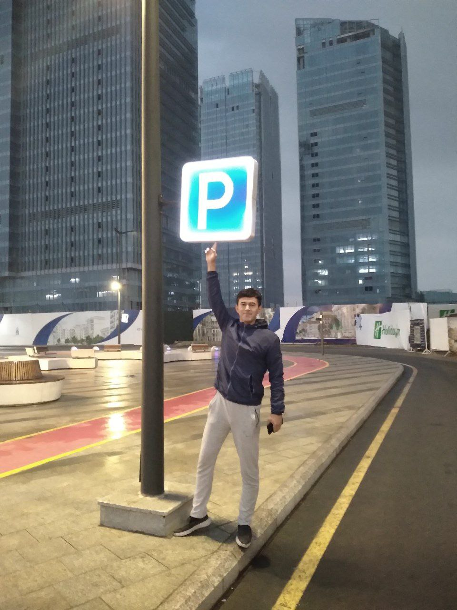

Rustamov Davron
Founder of the center, motivational speaker.
Born on May 25, 2002 in Kashkadarya region. As a child, he was curious and eager to learn. He was an ardent football fan since childhood and played very well.
In 2009 - 2020, he studied at the 43 rd school in Kashkadarya.
He graduated from school with honors and entered the University of Journalism and Mass Communications of Uzbekistan in 2021.
In 2021-2025, he also graduated from UzJOKU with good grades.
In 2025-2027, he also studied at the master's level at UzJOKU.
In 2028, he opened a training center with his friends under the name of Great Goals.And he is currently working as the leader of Nuer
The purpose of the era in life: The world is not your uncle.
Back to